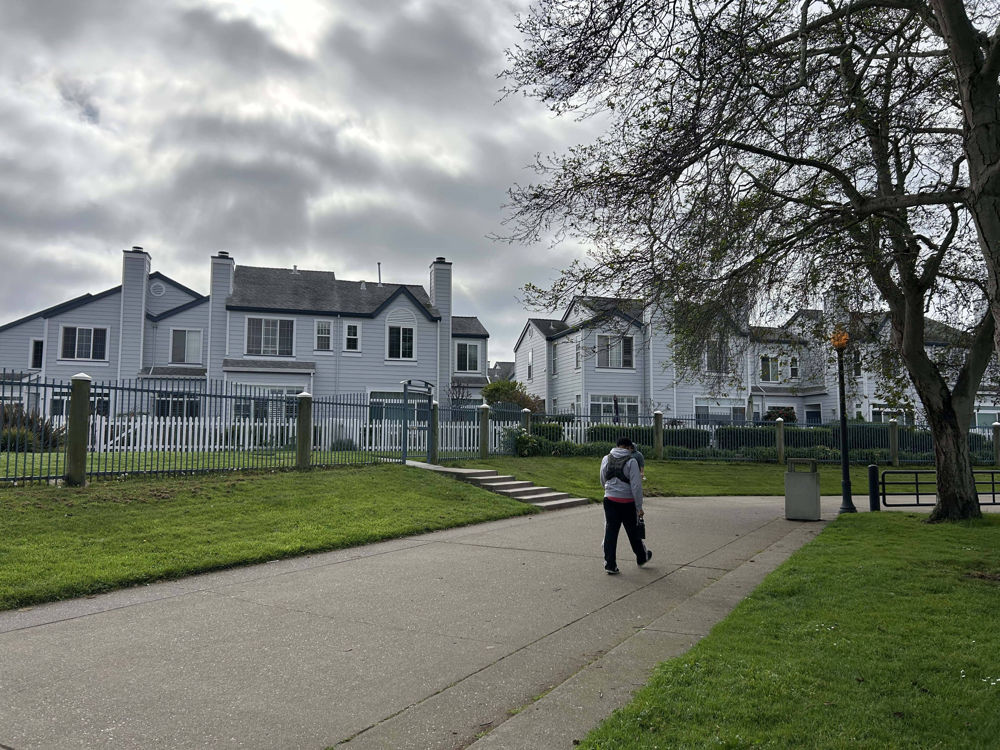
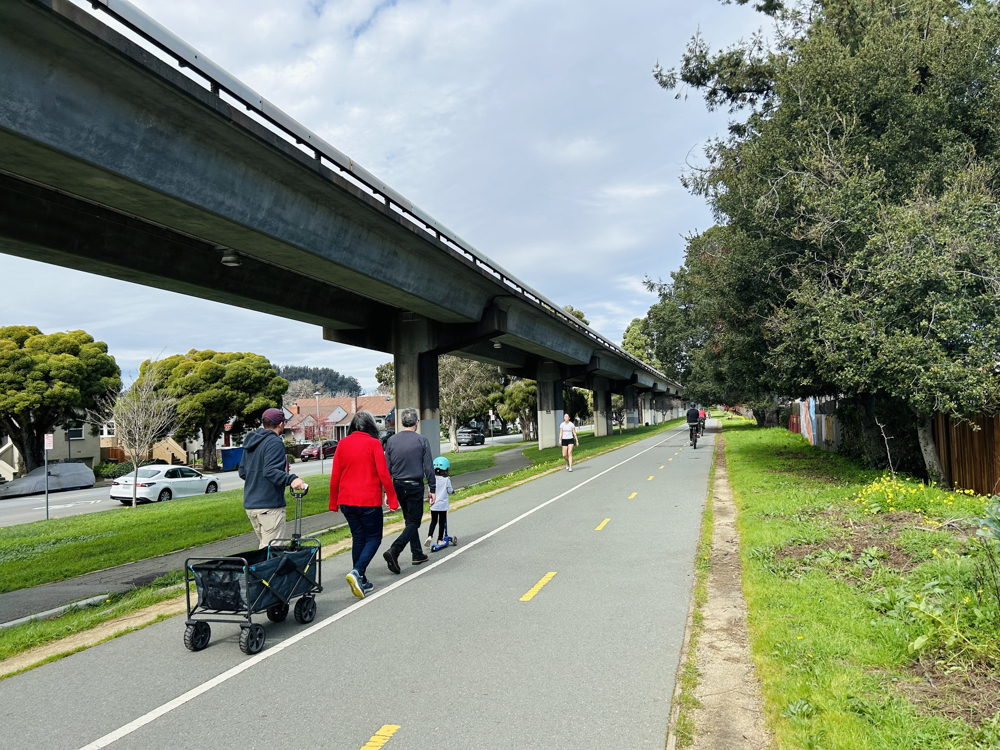
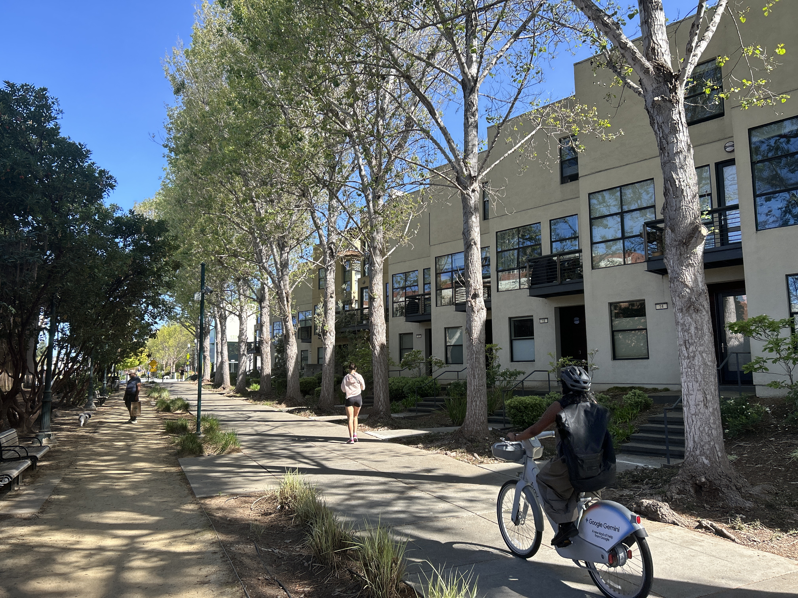
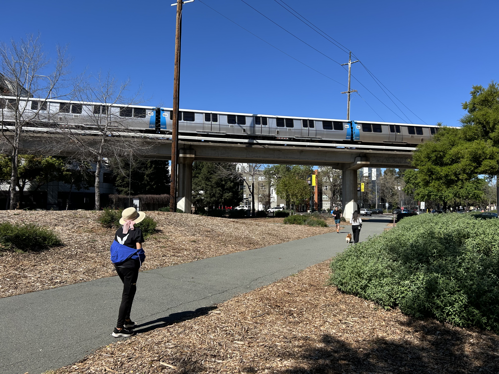

Trail-Oriented Development in the Bay Area
Trail-oriented development (TrOD) is a planning framework that uses off-street trails and greenways as anchors for compact, context-sensitive development. It connects people to key destinations through walkable, human-scaled design tailored to local conditions and priorities. The San Francisco Bay Area has a growing network of paved pathways, greenways, and other off-street trails that make up the regional trail network. These trails pass through dense urban neighborhoods, transit hubs, suburban areas, small towns, parks, civic destinations, and rural landscapes. They represent a major infrastructure resource for the region, presenting significant opportunities for communities to leverage trails to catalyze equitable development, increase mobility options and improve resilience. This map highlights a few examples of trail-oriented development in the Bay Area, showcasing how communities are leveraging trails as civic infrastructure that unlock a wide range benefits.

Marina Bay Trail
The Marina Bay neighborhood in Richmond offers direct connections from homes to the SF Bay Trail.

Ohlone Greenway
The Ohlone Greenway is a 4.5-mile pedestrian and bicycle path in the East Bay. In the City of El Cerrito, the Ohlone Greenway runs underneath the elevated Bay Area Rapid Transit (BART) tracks from the south to north City limits, providing critical first-last mile connectivity for residents. The Ohlone Greenway functions as a vibrant corridor that connects communities to recreation and transportation.

Emeryville Greenway
The Emeryville Greenway is a a 1.9-mile pedestrian and bicycle path that runs through through Emeryville from Berkeley to Oakland. This greenway connects people to employment, residences, shopping, regional transit, and the Bay Trail.

Iron Horse Trail
Running north/south though the San Francisco Bay Area region, the Iron Horse Trail is a 32-mile pedestrian and bycicle route used for both recreation and commuting, connecting kids to schools, commuters to business centers, and residents to parks and other amenities. It connects nine cities and several Bay Area Rapid Transit (BART) stations, making it easily accessible without a car.